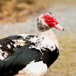
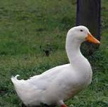

Muscovy Duck
Muscovy ducks are hardy birds that can adapt well to different farming conditions. They are commonly raised for meat and eggs.
A simple guide to raising healthy and productive ducks
Duck rearing requires suitable housing, nutritious food, clean water, good hygiene and proper veterinary care.

Muscovy ducks are hardy birds that can adapt well to different farming conditions. They are commonly raised for meat and eggs.

Pekin ducks are popular meat ducks. They grow quickly when provided with good feed, clean water and proper care.

Khaki Campbell ducks are well known for good egg production and are suitable for farmers interested in eggs.
Ducks need balanced food and clean water every day.
Feed should provide appropriate energy, protein, vitamins and minerals for the duck's age and purpose.
Healthy ducks need clean housing, clean water, good nutrition and regular observation.
Farmers can contact veterinary services and animal-resource organizations for advice about duck health, diseases, feeding and suitable breeds.
RAB provides animal-resource and veterinary-related services. Its veterinary laboratory network includes locations such as Nyagatare, Ngoma, Huye and Rubavu.
For medicines, farmers should visit a legitimate veterinary pharmacy or consult a veterinarian and explain the symptoms before buying treatment.
✔ Provide safe and comfortable housing.
✔ Protect ducks from predators.
✔ Provide nutritious feed.
✔ Provide clean drinking water.
✔ Clean the duck house regularly.
✔ Observe ducks every day for signs of illness.